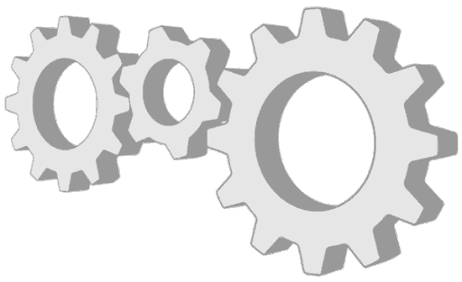

Engranaje
Un engranaje es un tipo de mecanismo que está formado por dos o más
ruedas dentadas y se utiliza para transmitir potencia mecánica y
movimiento de un componente a otro.
Su funcionamiento se basa en el acoplamiento de los dientes de una
rueda con los de otra, lo que permite transferir el movimiento de
manera precisa y eficiente. Si las dos ruedas
son de distinto tamaño, la mayor se denomina corona y la menor piñón. La relación entre sus tamaños influye
en la velocidad y la fuerza transmitida. Los engranajes sirven para
transmitir movimiento circular mediante el contacto de ruedas dentadas
y son ampliamente utilizados en máquinas, vehículos y equipos
industriales debido a su capacidad para
transmitir energía con poca pérdida y gran precisión.

Volver
al inicio